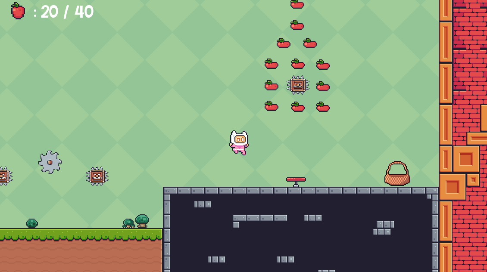
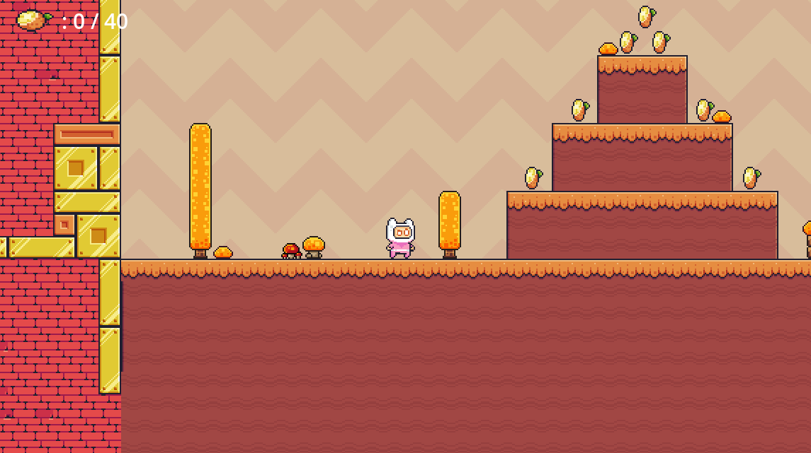

۴. هویت بصری و صوتی
در این بخش، به تعریف حس و حال هنری و شنیداری بازی میپردازیم. هدف ما خلق یک اتمسفر بهیادماندنی است که داستان و گیمپلی را به بهترین شکل تکمیل کند.
کارگردانی هنری: تضاد طبیعت و صنعت
هدف ما در طراحی بصری "Rust and Roots"، خلق دنیایی است که همزمان حس نوستالژی بازیهای کلاسیک را زنده کند و هم هویت منحصربهفرد خود را داشته باشد.
سبک هنری و پالت رنگی
سبک اصلی، هنر پیکسلی (Pixel Art) است که با دقت و ظرافت اجرا میشود تا جزئیات محیط و شخصیتها به خوبی قابل تشخیص باشند. پالت رنگی بازی بر اساس تم هر مرحله به صورت پویا تغییر میکند تا تضاد بین طبیعت و ماشین را به زیبایی به تصویر بکشد:
مرحله اول (جنگل سرسبز)
در این مرحله از رنگهای سبز شاداب، قهوهایهای خاکی و آبی زنده برای نمایش "ریشهها" و امید به زندگی استفاده میشود.
مرحله دوم (درههای گرم)
پالت رنگی به سمت زرد، نارنجی و قرمزهای گرم متمایل میشود تا حس یک محیط خشکتر، پاییزی و صنعتیتر را القا کند و نفوذ "زنگار" را نشان دهد.
طراحی شخصیت و محیط
طراحی پینکو ساده، کوچک و دوستداشتنی است تا بازیکن به سرعت با او ارتباط برقرار کند. در مقابل، دشمنان مانند کله تیغی ظاهری سخت و مکانیکی دارند. این تضاد در محیط نیز دیده میشود، جایی که گیاهان و درختان از دل سکوهای فلزی و آجرهای فرسوده بیرون زدهاند و داستانی خاموش از گذشتهی این سرزمین را روایت میکنند.
طراحی صدا: سمفونی ریشه و زنگار
صدا و موسیقی در "Rust and Roots" نقشی حیاتی در ساختن اتمسفر و ارائه بازخورد به بازیکن دارد.
موسیقی متن
موسیقی بازی ترکیبی از ملودیهای ماجراجویانه و تمهای آرام خواهد بود. این موسیقی باید انقدری جذاب باشد که برای بازیکن یه خاطره ماندگار را به جا بگذارد.
افکتهای صوتی کلیدی (SFX)
این افکت ها به بازی روح میدهند و حس خوبی را به بازیکن القا میکنند. این صداها بازی رو از حالت خشکی دراورده و به حرکات کاراکتر جلوه میدهد. افکتهای صوتی باید کوتاه، واضح و رضایتبخش باشند تا هر عمل بازیکن بازخورد شنیداری مناسبی داشته باشد:
-
صدای پرش و پرش دوتایی: صدایی فنری و پرانرژی برای ایجاد حس خوب در حرکت.
-
صدای تیراندازی: یک صدای "پیو" مانند کوتاه و سریع که حس قدرت را منتقل کند.
-
صدای جمعآوری میوه: صدایی دلنشین و تشویقکننده که به بازیکن پاداش دهد.
-
صدای انفجار دشمن: یک صدای انفجار پیکسلی کوتاه و رضایتبخش.
-
صدای مرگ پینکو: یک صدای کوتاه و تأثیرگذار که شکست را به خوبی نشان دهد.